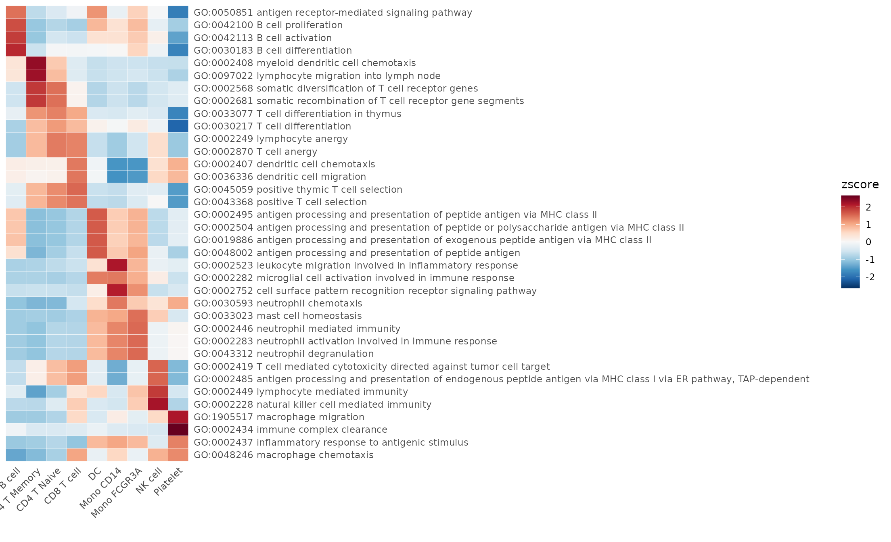
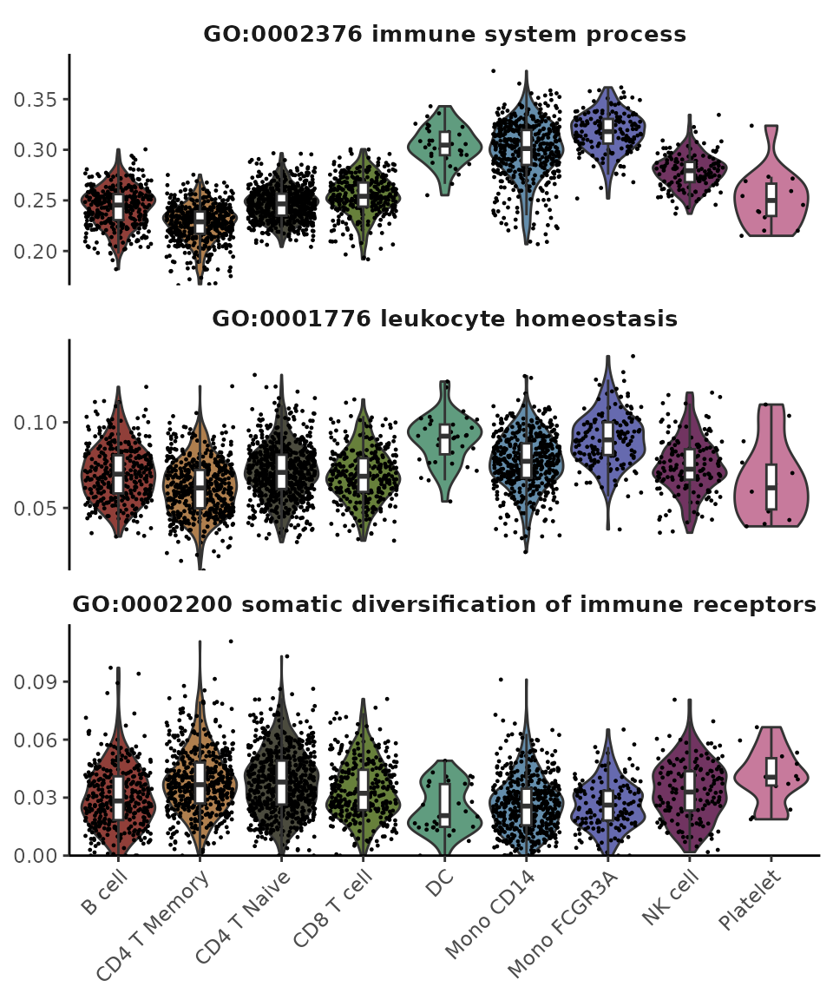
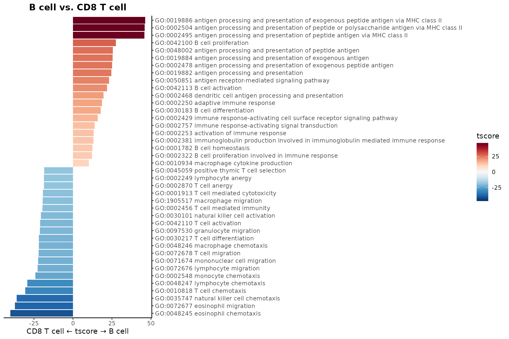
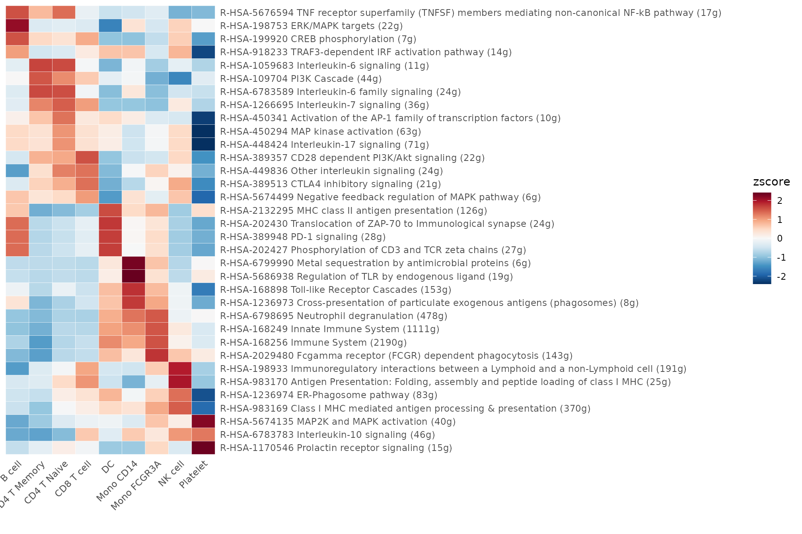
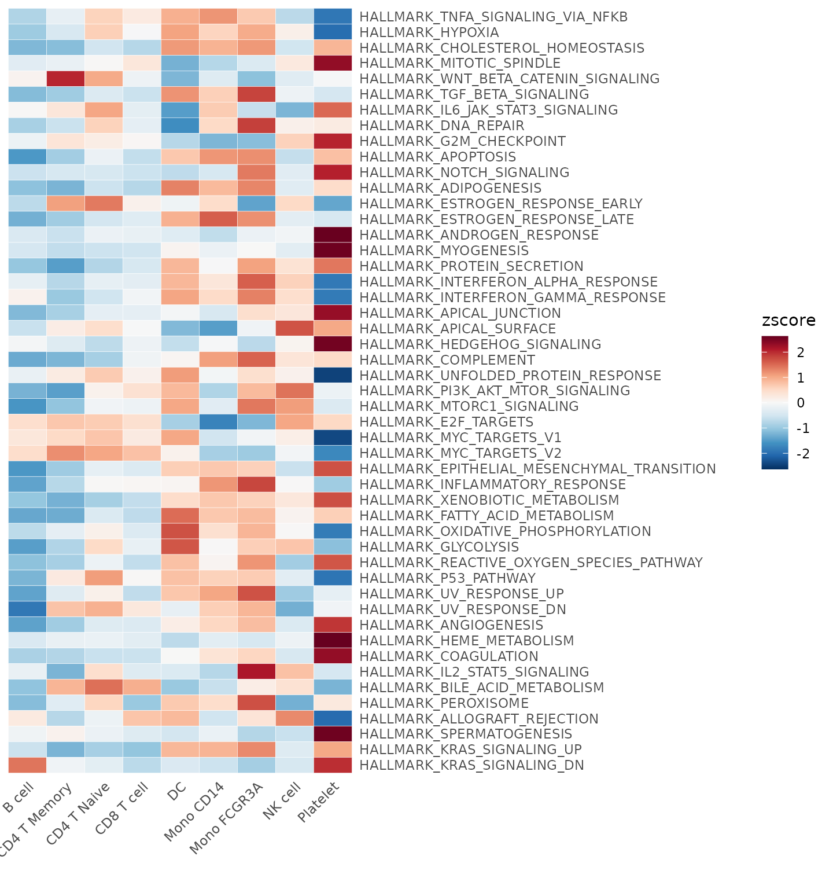
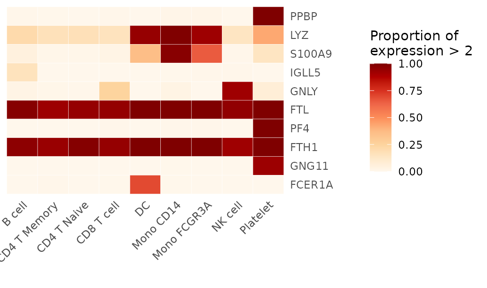

Lesson 4: Gene Set Enrichment Analysis and Utility Functions
Yichao Hua
2024-11-29
4.GSEA.RmdIntroduction to Gene Set Enrichment Analysis (GSEA)
In our previous lessons, we primarily focused on gene-level analysis. However, it’s often necessary to analyze data at the gene set level to gain broader biological insights. A common scenario involves examining the enrichment of gene sets from databases like Gene Ontology (GO) or from literature in different cell clusters within our data. This is where Gene Set Enrichment Analysis (GSEA) comes into play.
Traditionally, functional enrichment analysis for bulk RNA-seq data involves identifying differentially expressed genes (DEGs) based on a predetermined cut-off and then comparing the resulting gene list against pathway databases to calculate enrichment scores. However, this approach has several limitations:
- It fails to capture the nuances of single-cell data.
- It relies on arbitrary cut-offs, potentially missing important biological signals.
For single-cell analysis, we have specialized tools designed to
calculate GSEA more accurately. In the SeuratExtend
package, we use the AUCell method to compute pathway enrichment scores.
This method calculates an enrichment score for each cell, allowing us to
compare differences between clusters at the single-cell level.
In this lesson, we’ll cover:
- GSEA calculation methods
- Common gene set / pathway databases (GO, Reactome, Hallmark50, etc.)
- How to use these databases in your analysis
Conducting GSEA using GO or Reactome Databases
Before we dive into the analysis, let’s briefly introduce two key databases we’ll be using:
-
Gene Ontology (GO): GO is a major bioinformatics initiative to unify the representation of gene and gene product attributes across all species. It provides a controlled vocabulary of terms for describing gene product characteristics and gene product annotation data. The GO project classifies gene functions into three aspects:
- Biological Process (BP)
- Molecular Function (MF)
- Cellular Component (CC)
For more information, visit the official GO website: https://geneontology.org/
Reactome: Reactome is an open-source, curated and peer-reviewed pathway database. It provides intuitive bioinformatics tools for the visualization, interpretation and analysis of pathway knowledge to support basic and clinical research, genome analysis, modeling, systems biology and education. You can explore Reactome’s extensive resources at their official website: https://reactome.org/
The SeuratExtend package integrates both the GO and
Reactome databases, streamlining the GSEA analysis process. This is
primarily facilitated through the GeneSetAnalysisGO and
GeneSetAnalysisReactome functions, among other
supplementary functions. In this section, we’ll delve into the usage and
features of these functions.
Setting Up the Environment
First, let’s set your working directory to where we’ll store all course materials. If you followed Lesson 1, this would be:
# Set working directory to the course folder created in Lesson 1
# If you used a different location, replace this path with your chosen directory
setwd("~/Documents/single-cell-course")Load the necessary libraries and our previously saved PBMC object:
Gene Ontology (GO) Database Analysis
Performing GSEA using the GO database can be resource-intensive due to its extensive size. To make the analysis more feasible, you might consider evaluating pathways under specific categories. For instance, in the example below, we’ll focus on pathways under the “immune_system_process” category.
Note: When running GeneSetAnalysisGO for the first time,
you may be prompted to install some required packages such as
DelayedArray, DelayedMatrixStats, and
doMC (for multi-threading computations). Simply confirm the
installation of these packages when prompted.
pbmc <- GeneSetAnalysisGO(pbmc, parent = "immune_system_process", nCores = 4) # calculating with 4 cores
matr <- pbmc@misc$AUCell$GO$immune_system_process
matr <- RenameGO(matr, add_n_gene = FALSE) # Convert GO IDs to pathway names
head(matr, c(5,3))## cells
## gene sets AAACATACAACCAC-1
## GO:0002376 immune system process 0.23253379
## GO:0001776 leukocyte homeostasis 0.05306271
## GO:0002200 somatic diversification of immune receptors 0.03449422
## GO:0002252 immune effector process 0.10151694
## GO:0002253 activation of immune response 0.08329149
## cells
## gene sets AAACATTGAGCTAC-1
## GO:0002376 immune system process 0.27669108
## GO:0001776 leukocyte homeostasis 0.07098796
## GO:0002200 somatic diversification of immune receptors 0.03453330
## GO:0002252 immune effector process 0.14171700
## GO:0002253 activation of immune response 0.12190542
## cells
## gene sets AAACATTGATCAGC-1
## GO:0002376 immune system process 0.28803920
## GO:0001776 leukocyte homeostasis 0.08491692
## GO:0002200 somatic diversification of immune receptors 0.04000547
## GO:0002252 immune effector process 0.13312274
## GO:0002253 activation of immune response 0.09172829Note that the generated matrix is similar in structure to a gene count matrix, with cell names as column names. The key difference is that the row names now represent pathway names instead of gene names.
For the “parent” argument in GeneSetAnalysisGO(), you
can input any term from the GO database, be it a GO ID or a pathway
name. To get a glimpse of commonly used GO categories, you can run
GeneSetAnalysisGO() without any arguments:
## immune_system_process response_to_stimulus
## "GO:0002376" "GO:0050896"
## signaling metabolic_process
## "GO:0023052" "GO:0008152"
## regulation_of_vasculature_development signal_transduction
## "GO:1901342" "GO:0007165"Visualizing GO GSEA Results
There are several ways to visualize the results of our GSEA analysis. Here are some suggested methods:
- Heatmap: Useful for comparing multiple groups with numerous features but provides a less detailed representation.
toplot <- CalcStats(matr, f = pbmc$cluster, order = "p", n = 4)
Heatmap(toplot, lab_fill = "zscore")
Note that we’re using the CalcStats function here. In
Lesson 3, we learned to use this function with a Seurat object as the
first input parameter. However, CalcStats and some
visualization functions like VlnPlot2 and
WaterfallPlot also support matrices as input, increasing
flexibility. The main difference when using a matrix is that you need to
provide an f parameter, which is a factor or vector
indicating cell identity. Typically, this can be directly referenced
from a column in the meta.data.
- Violin Plot: Best suited for comparing multiple groups with fewer features while presenting more details for individual data points.
VlnPlot2(matr[1:3,], f = pbmc$cluster, ncol = 1)
- Waterfall Plot: Ideal for comparing two groups.
WaterfallPlot(matr, f = pbmc$cluster, ident.1 = "B cell", ident.2 = "CD8 T cell", top.n = 20)
Reactome Database Analysis
For GSEA using the Reactome database, we’ll follow a similar process. Let’s assess pathways under the “Immune System” category:
pbmc <- GeneSetAnalysisReactome(pbmc, parent = "Immune System")
matr <- pbmc@misc$AUCell$Reactome$`Immune System`
matr <- RenameReactome(matr)
Heatmap(CalcStats(matr, f = pbmc$cluster, order = "p", n = 4), lab_fill = "zscore")
Similar to the GO database, running
GeneSetAnalysisReactome() without any arguments lets you
view commonly used categories in the Reactome database:
## R-HSA-109582 R-HSA-112316
## "Hemostasis" "Neuronal System"
## R-HSA-1266738 R-HSA-1430728
## "Developmental Biology" "Metabolism"
## R-HSA-1474165 R-HSA-1474244
## "Reproduction" "Extracellular matrix organization"
## R-HSA-1500931 R-HSA-162582
## "Cell-Cell communication" "Signal Transduction"
## R-HSA-1640170 R-HSA-1643685
## "Cell Cycle" "Disease"
## R-HSA-168256 R-HSA-1852241
## "Immune System" "Organelle biogenesis and maintenance"
## R-HSA-382551 R-HSA-392499
## "Transport of small molecules" "Metabolism of proteins"
## R-HSA-397014
## "Muscle contraction"
## [ reached getOption("max.print") -- omitted 12 entries ]Perform GSEA using Customized Gene Sets
While GO and Reactome databases provide comprehensive pathway information, sometimes researchers need to work with specific, customized gene sets. In this section, we’ll explore how to perform GSEA using custom gene sets and access pre-defined gene set collections.
Using the Hallmark 50 Gene Set
The Hallmark
50 gene set is commonly used for general screening. When using the
GeneSetAnalysis function, the genesets
parameter requires a list in a specific format. Each list item should be
a gene set containing all the gene names in that set. For example, the
structure of hall50$human looks like this:
str(hall50$human, list.len = 10, max.level = 1)## List of 50
## $ HALLMARK_TNFA_SIGNALING_VIA_NFKB : chr [1:200] "JUNB" "CXCL2" "ATF3" "NFKBIA" ...
## $ HALLMARK_HYPOXIA : chr [1:200] "PGK1" "PDK1" "GBE1" "PFKL" ...
## $ HALLMARK_CHOLESTEROL_HOMEOSTASIS : chr [1:74] "FDPS" "CYP51A1" "IDI1" "FDFT1" ...
## $ HALLMARK_MITOTIC_SPINDLE : chr [1:199] "ARHGEF2" "CLASP1" "KIF11" "AC027237.1" ...
## $ HALLMARK_WNT_BETA_CATENIN_SIGNALING : chr [1:42] "MYC" "CTNNB1" "JAG2" "NOTCH1" ...
## $ HALLMARK_TGF_BETA_SIGNALING : chr [1:54] "TGFBR1" "SMAD7" "TGFB1" "SMURF2" ...
## $ HALLMARK_IL6_JAK_STAT3_SIGNALING : chr [1:87] "IL4R" "IL6ST" "STAT1" "IL1R1" ...
## $ HALLMARK_DNA_REPAIR : chr [1:150] "POLR2H" "POLR2A" "POLR2G" "POLR2E" ...
## $ HALLMARK_G2M_CHECKPOINT : chr [1:200] "AURKA" "CCNA2" "TOP2A" "CCNB2" ...
## $ HALLMARK_APOPTOSIS : chr [1:161] "CASP3" "CASP9" "DFFA" "CASP7" ...
## [list output truncated]Each list item is a character vector containing the gene names belonging to that gene set. Now, let’s use this gene set for our analysis:
pbmc <- GeneSetAnalysis(pbmc, genesets = hall50$human)
matr <- pbmc@misc$AUCell$genesets
Heatmap(CalcStats(matr, f = pbmc$cluster), lab_fill = "zscore")
The resulting AUCell matrix is stored in
seu@misc$AUCell[[title]].
Exploring Additional Gene Sets
The SeuratExtendData::Genesets_data object offers an
extensive collection of gene sets from the GSEA
MSigDB website. You can view available collections:
names(Genesets_data$human$GSEA)## [1] "positional gene sets"
## [2] "all curated gene sets"
## [3] "chemical and genetic perturbations"
## [4] "BioCarta gene sets"
## [5] "KEGG gene sets"
## [6] "PID gene sets"
## [7] "all canonical pathways"
## [8] "all motif gene sets"
## [9] "transcription factor targets"
## [10] "all computational gene sets"
## [11] "all immunologic signatures gene sets"
## [12] "hallmark gene sets"For cell type annotations, PanglaoDB_data provides
marker lists for 178 distinct cell types from PanglaoDB:
names(PanglaoDB_data$marker_list_human)## [1] "Acinar cells" "Adipocyte progenitor cells"
## [3] "Adipocytes" "Adrenergic neurons"
## [5] "Airway epithelial cells" "Airway goblet cells"
## [7] "Airway smooth muscle cells" "Alpha cells"
## [9] "Alveolar macrophages" "Anterior pituitary gland cells"
## [11] "Astrocytes" "B cells"
## [13] "B cells memory" "B cells naive"
## [15] "Basal cells"
## [ reached getOption("max.print") -- omitted 163 entries ]Converting Pathway IDs to Names
Pathway IDs can be cryptic. The RenameGO and
RenameReactome functions help convert these IDs to more
descriptive names:
## [1] "GO:0002376 immune system process (3213g)"
## [2] "GO:0050896 response to stimulus (9342g)"
# Convert Reactome IDs
RenameReactome(c("R-HSA-109582","R-HSA-112316"), spe = "human")## [1] "R-HSA-109582 Hemostasis (679g)" "R-HSA-112316 Neuronal System (411g)"Filtering Pathway Lists
To focus on relevant pathways, use FilterGOTerms and
FilterReactomeTerms:
Filtering GO Pathways
# By parent term
terms <- FilterGOTerms(parent = "GO:0002376") # immune system process (3213g)
RenameGO(terms)## [1] "GO:0001773 myeloid dendritic cell activation (28g)"
## [2] "GO:0001774 microglial cell activation (45g)"
## [3] "GO:0001776 leukocyte homeostasis (84g)"
## [4] "GO:0001777 T cell homeostatic proliferation (4g)"
## [5] "GO:0001779 natural killer cell differentiation (21g)"
## [6] "GO:0001780 neutrophil homeostasis (16g)"
## [7] "GO:0001782 B cell homeostasis (27g)"
## [8] "GO:0001787 natural killer cell proliferation (11g)"
## [9] "GO:0001788 antibody-dependent cellular cytotoxicity (2g)"
## [10] "GO:0001794 type IIa hypersensitivity (4g)"
## [11] "GO:0001802 type III hypersensitivity (2g)"
## [12] "GO:0001806 type IV hypersensitivity (4g)"
## [13] "GO:0001865 NK T cell differentiation (10g)"
## [14] "GO:0001866 NK T cell proliferation (7g)"
## [15] "GO:0001867 complement activation, lectin pathway (11g)"
## [ reached getOption("max.print") -- omitted 392 entries ]
# By gene count
terms2 <- FilterGOTerms(term = terms, n.min = 10, n.max = 100)
RenameGO(terms2)## [1] "GO:0001773 myeloid dendritic cell activation (28g)"
## [2] "GO:0001774 microglial cell activation (45g)"
## [3] "GO:0001776 leukocyte homeostasis (84g)"
## [4] "GO:0001779 natural killer cell differentiation (21g)"
## [5] "GO:0001780 neutrophil homeostasis (16g)"
## [6] "GO:0001782 B cell homeostasis (27g)"
## [7] "GO:0001787 natural killer cell proliferation (11g)"
## [8] "GO:0001865 NK T cell differentiation (10g)"
## [9] "GO:0001867 complement activation, lectin pathway (11g)"
## [10] "GO:0001913 T cell mediated cytotoxicity (46g)"
## [11] "GO:0002200 somatic diversification of immune receptors (77g)"
## [12] "GO:0002204 somatic recombination of immunoglobulin genes involved in immune response (50g)"
## [13] "GO:0002208 somatic diversification of immunoglobulins involved in immune response (50g)"
## [14] "GO:0002227 innate immune response in mucosa (19g)"
## [15] "GO:0002228 natural killer cell mediated immunity (64g)"
## [ reached getOption("max.print") -- omitted 128 entries ]
# End-level pathways
terms3 <- FilterGOTerms(term = terms, only.end.terms = TRUE)
RenameGO(terms3)## [1] "GO:0001777 T cell homeostatic proliferation (4g)"
## [2] "GO:0001780 neutrophil homeostasis (16g)"
## [3] "GO:0001787 natural killer cell proliferation (11g)"
## [4] "GO:0001788 antibody-dependent cellular cytotoxicity (2g)"
## [5] "GO:0001802 type III hypersensitivity (2g)"
## [6] "GO:0001806 type IV hypersensitivity (4g)"
## [7] "GO:0001865 NK T cell differentiation (10g)"
## [8] "GO:0001866 NK T cell proliferation (7g)"
## [9] "GO:0001867 complement activation, lectin pathway (11g)"
## [10] "GO:0001905 activation of membrane attack complex (3g)"
## [11] "GO:0001922 B-1 B cell homeostasis (3g)"
## [12] "GO:0002223 stimulatory C-type lectin receptor signaling pathway (112g)"
## [13] "GO:0002227 innate immune response in mucosa (19g)"
## [14] "GO:0002232 leukocyte chemotaxis involved in inflammatory response (5g)"
## [15] "GO:0002264 endothelial cell activation involved in immune response (1g)"
## [ reached getOption("max.print") -- omitted 185 entries ]Filtering Reactome Pathways
terms <- FilterReactomeTerms(parent = "R-HSA-168256")
RenameReactome(terms)## [1] "R-HSA-1059683 Interleukin-6 signaling (11g)"
## [2] "R-HSA-109703 PKB-mediated events (2g)"
## [3] "R-HSA-109704 PI3K Cascade (44g)"
## [4] "R-HSA-1168372 Downstream signaling events of B Cell Receptor (BCR) (81g)"
## [5] "R-HSA-1169091 Activation of NF-kappaB in B cells (67g)"
## [6] "R-HSA-1169092 Activation of RAS in B cells (5g)"
## [7] "R-HSA-1169408 ISG15 antiviral mechanism (74g)"
## [8] "R-HSA-1169410 Antiviral mechanism by IFN-stimulated genes (82g)"
## [9] "R-HSA-1170546 Prolactin receptor signaling (15g)"
## [10] "R-HSA-1222556 ROS and RNS production in phagocytes (36g)"
## [11] "R-HSA-1236973 Cross-presentation of particulate exogenous antigens (phagosomes) (8g)"
## [12] "R-HSA-1236974 ER-Phagosome pathway (83g)"
## [13] "R-HSA-1236975 Antigen processing-Cross presentation (99g)"
## [14] "R-HSA-1236977 Endosomal/Vacuolar pathway (11g)"
## [15] "R-HSA-1236978 Cross-presentation of soluble exogenous antigens (endosomes) (50g)"
## [ reached getOption("max.print") -- omitted 182 entries ]Finding Pathways in Databases
Navigating large databases like GO and Reactome can be challenging.
The SearchDatabase function simplifies this process with
various search parameters.
General Search
You can search by gene name, pathway ID, or keywords:
# Search for pathways that either contain the gene CD3D in their gene list,
# or have 'metabolic' in their pathway name
result <- SearchDatabase(c("CD3D", "metabolic"))
names(result)## [1] "GO:0000023 maltose metabolic process (3g)"
## [2] "GO:0000038 very long-chain fatty acid metabolic process (31g)"
## [3] "GO:0000052 citrulline metabolic process (8g)"
## [4] "GO:0000053 argininosuccinate metabolic process (1g)"
## [5] "GO:0000096 sulfur amino acid metabolic process (43g)"
## [6] "GO:0000255 allantoin metabolic process (2g)"
## [7] "GO:0000270 peptidoglycan metabolic process (6g)"
## [8] "GO:0000820 regulation of glutamine family amino acid metabolic process (6g)"
## [9] "GO:0000821 regulation of arginine metabolic process (2g)"
## [10] "GO:0000959 mitochondrial RNA metabolic process (48g)"
## [11] "GO:0001523 retinoid metabolic process (103g)"
## [12] "GO:0001573 ganglioside metabolic process (21g)"
## [13] "GO:0001575 globoside metabolic process (1g)"
## [14] "GO:0001676 long-chain fatty acid metabolic process (110g)"
## [15] "GO:0001692 histamine metabolic process (4g)"
## [ reached getOption("max.print") -- omitted 1026 entries ]## List of 6
## $ GO:0000023 maltose metabolic process (3g) :List of 3
## ..$ SetID : chr "GO:0000023"
## ..$ SetName: chr "maltose metabolic process"
## ..$ Genes : chr [1:3] "MGAM" "GAA" "GANC"
## $ GO:0000038 very long-chain fatty acid metabolic process (31g):List of 3
## ..$ SetID : chr "GO:0000038"
## ..$ SetName: chr "very long-chain fatty acid metabolic process"
## ..$ Genes : chr [1:31] "ELOVL7" "HACD1" "SLC27A2" "ACAA1" ...
## $ GO:0000052 citrulline metabolic process (8g) :List of 3
## ..$ SetID : chr "GO:0000052"
## ..$ SetName: chr "citrulline metabolic process"
## ..$ Genes : chr [1:8] "DDAH1" "DDAH2" "OTC" "ASS1" ...
## $ GO:0000053 argininosuccinate metabolic process (1g) :List of 3
## ..$ SetID : chr "GO:0000053"
## ..$ SetName: chr "argininosuccinate metabolic process"
## ..$ Genes : chr "ASS1"
## $ GO:0000096 sulfur amino acid metabolic process (43g) :List of 3
## ..$ SetID : chr "GO:0000096"
## ..$ SetName: chr "sulfur amino acid metabolic process"
## ..$ Genes : chr [1:43] "F2Z2F3" "AHCYL1" "CBSL" "MTHFD1" ...
## $ GO:0000255 allantoin metabolic process (2g) :List of 3
## ..$ SetID : chr "GO:0000255"
## ..$ SetName: chr "allantoin metabolic process"
## ..$ Genes : chr [1:2] "URAD" "ALLC"Species-Specific Search
Specify ‘human’ or ‘mouse’ using the ‘spe’ parameter:
result <- SearchDatabase("antigen pr", spe = "mouse") # Pathways related to antigen presentation
names(result)## [1] "GO:0002291 T cell activation via T cell receptor contact with antigen bound to MHC molecule on antigen presenting cell (7g)"
## [2] "GO:0002428 antigen processing and presentation of peptide antigen via MHC class Ib (40g)"
## [3] "GO:0002457 T cell antigen processing and presentation (7g)"
## [4] "GO:0002468 dendritic cell antigen processing and presentation (11g)"
## [5] "GO:0002470 plasmacytoid dendritic cell antigen processing and presentation (1g)"
## [6] "GO:0002472 macrophage antigen processing and presentation (1g)"
## [7] "GO:0002474 antigen processing and presentation of peptide antigen via MHC class I (54g)"
## [8] "GO:0002475 antigen processing and presentation via MHC class Ib (44g)"
## [9] "GO:0002476 antigen processing and presentation of endogenous peptide antigen via MHC class Ib (39g)"
## [10] "GO:0002477 antigen processing and presentation of exogenous peptide antigen via MHC class Ib (4g)"
## [11] "GO:0002478 antigen processing and presentation of exogenous peptide antigen (25g)"
## [12] "GO:0002479 antigen processing and presentation of exogenous peptide antigen via MHC class I, TAP-dependent (2g)"
## [13] "GO:0002481 antigen processing and presentation of exogenous protein antigen via MHC class Ib, TAP-dependent (3g)"
## [14] "GO:0002483 antigen processing and presentation of endogenous peptide antigen (44g)"
## [15] "GO:0002484 antigen processing and presentation of endogenous peptide antigen via MHC class I via ER pathway (39g)"
## [ reached getOption("max.print") -- omitted 48 entries ]## List of 6
## $ GO:0002291 T cell activation via T cell receptor contact with antigen bound to MHC molecule on antigen presenting cell (7g):List of 3
## ..$ SetID : chr "GO:0002291"
## ..$ SetName: chr "T cell activation via T cell receptor contact with antigen bound to MHC molecule on antigen presenting cell"
## ..$ Genes : chr [1:7] "Fgl2" "Cd81" "Apbb1ip" "Havcr2" ...
## $ GO:0002428 antigen processing and presentation of peptide antigen via MHC class Ib (40g) :List of 3
## ..$ SetID : chr "GO:0002428"
## ..$ SetName: chr "antigen processing and presentation of peptide antigen via MHC class Ib"
## ..$ Genes : chr [1:40] "Fcgrt" "Azgp1" "Hfe" "H2-M10.1" ...
## $ GO:0002457 T cell antigen processing and presentation (7g) :List of 3
## ..$ SetID : chr "GO:0002457"
## ..$ SetName: chr "T cell antigen processing and presentation"
## ..$ Genes : chr [1:7] "Was" "Hfe" "Trex1" "Treml4" ...
## $ GO:0002468 dendritic cell antigen processing and presentation (11g) :List of 3
## ..$ SetID : chr "GO:0002468"
## ..$ SetName: chr "dendritic cell antigen processing and presentation"
## ..$ Genes : chr [1:11] "Ccr7" "Fgl2" "Nod1" "Slc11a1" ...
## $ GO:0002470 plasmacytoid dendritic cell antigen processing and presentation (1g) :List of 3
## ..$ SetID : chr "GO:0002470"
## ..$ SetName: chr "plasmacytoid dendritic cell antigen processing and presentation"
## ..$ Genes : chr "Clec4a2"
## $ GO:0002472 macrophage antigen processing and presentation (1g) :List of 3
## ..$ SetID : chr "GO:0002472"
## ..$ SetName: chr "macrophage antigen processing and presentation"
## ..$ Genes : chr "Fgl2"Customizing Return Types
The SearchDatabase function offers various return types
to suit different analytical needs:
- When
return = "ID", the function returns matching pathway IDs. These IDs can be directly used withFilterGOTermsandFilterReactomeTermsfunctions for further filtering and analysis.
# Return pathway IDs
result <- SearchDatabase("metabolic", return = "ID")
result## [1] "GO:0000023" "GO:0000038" "GO:0000052" "GO:0000053" "GO:0000096"
## [6] "GO:0000255" "GO:0000270" "GO:0000820" "GO:0000821" "GO:0000959"
## [11] "GO:0001523" "GO:0001573" "GO:0001575" "GO:0001676" "GO:0001692"
## [ reached getOption("max.print") -- omitted 873 entries ]- When
return = "genelist", the function returns a list of genes formatted to match the input required by theGeneSetAnalysisfunction. This allows you to directly use the search results for enrichment analysis of specific pathways, without needing to callGeneSetAnalysisGOorGeneSetAnalysisReactome(which are typically used for more general screening).
# Return as a gene list for GeneSetAnalysis
result <- SearchDatabase("metabolic", return = "genelist")
str(result, list.len = 10, max.level = 1)## List of 888
## $ GO:0000023 : chr [1:3] "MGAM" "GAA" "GANC"
## $ GO:0000038 : chr [1:31] "ELOVL7" "HACD1" "SLC27A2" "ACAA1" ...
## $ GO:0000052 : chr [1:8] "DDAH1" "DDAH2" "OTC" "ASS1" ...
## $ GO:0000053 : chr "ASS1"
## $ GO:0000096 : chr [1:43] "F2Z2F3" "AHCYL1" "CBSL" "MTHFD1" ...
## $ GO:0000255 : chr [1:2] "URAD" "ALLC"
## $ GO:0000270 : chr [1:6] "PGLYRP1" "LYG2" "LYG1" "PGLYRP4" ...
## $ GO:0000820 : chr [1:6] "ATP2B4" "ATCAY" "NR1H4" "SLC7A7" ...
## $ GO:0000821 : chr [1:2] "ATP2B4" "SLC7A7"
## $ GO:0000959 : chr [1:48] "M0R2C6" "POLRMT" "PRORP" "FOXO3" ...
## [list output truncated]This flexibility enables you to choose the most appropriate output format based on your specific needs, thereby streamlining subsequent analysis steps.
Creating GSEA Plots
The GSEAplot function generates visualizations similar
to those from the Broad Institute’s GSEA:
GSEAplot(
pbmc,
ident.1 = "CD4 T Naive",
title = "INTERFERON_GAMMA_RESPONSE",
geneset = hall50$human$HALLMARK_INTERFERON_GAMMA_RESPONSE
)
This plot shows the negative enrichment of the “INTERFERON_GAMMA_RESPONSE” gene set in the “CD4 T Naive” cell population compared to non-CD4 T Naive cells. The negative Enrichment Score and the downward trend of the enrichment plot indicate that this pathway is downregulated in CD4 T Naive cells. The highly significant p-value suggests that this downregulation is statistically meaningful.
Utility Functions for Gene Analysis
In addition to GSEA, there are several utility functions in
SeuratExtend that can greatly facilitate your scRNA-seq
analysis. Let’s explore some of these useful tools.
Gene Naming Conversions
Gene naming conventions often vary between organisms and databases.
SeuratExtend provides functions to convert between human
and mouse gene symbols, as well as Ensembl IDs. These functions use a
localized version of the biomaRt database, improving
reliability and performance.
Available Conversion Functions:
HumanToMouseGenesymbolMouseToHumanGenesymbolEnsemblToGenesymbolGenesymbolToEnsembl
These functions share a similar usage pattern, as detailed below
using HumanToMouseGenesymbol as an example.
Getting Started with Examples
First, let’s retrieve a few human gene symbols from a dataset as an example:
human_genes <- VariableFeatures(pbmc)[1:6]
print(human_genes)## [1] "PPBP" "LYZ" "S100A9" "IGLL5" "GNLY" "FTL"Default Usage
By default, HumanToMouseGenesymbol returns a data frame
showing how human gene symbols (HGNC) match with mouse gene symbols
(MGI):
HumanToMouseGenesymbol(human_genes)## MGI.symbol HGNC.symbol
## 227 9530003J23Rik LYZ
## 6304 Ftl1 FTL
## 6305 Ftl1-ps1 FTL
## 8244 Gm5849 S100A9
## 15496 Ppbp PPBPThis table indicates that not all human genes have direct mouse homologs, and some human genes may correspond to multiple mouse genes.
Simplified Output
If you prefer a simpler vector output without the matching details:
HumanToMouseGenesymbol(human_genes, match = FALSE)## [1] "9530003J23Rik" "Ftl1" "Ftl1-ps1" "Gm5849"
## [5] "Ppbp"Converting Gene Expression Matrices
These functions can also directly convert human gene expression matrices to their mouse counterparts:
# Create an example gene expression matrix
human_matr <- GetAssayData(pbmc)[human_genes, 1:4]
print(human_matr)## 6 x 4 sparse Matrix of class "dgCMatrix"
## AAACATACAACCAC-1 AAACATTGAGCTAC-1 AAACATTGATCAGC-1 AAACCGTGCTTCCG-1
## PPBP . . . 1.566387
## LYZ 1.635208 1.962726 1.994867 4.521175
## S100A9 . . . 3.838845
## IGLL5 . . . .
## GNLY . . 1.429261 .
## FTL 3.923285 3.063189 3.273549 5.692271
# Convert to a mouse gene expression matrix
HumanToMouseGenesymbol(human_matr)## 4 x 4 sparse Matrix of class "dgCMatrix"
## AAACATACAACCAC-1 AAACATTGAGCTAC-1 AAACATTGATCAGC-1
## Ppbp . . .
## 9530003J23Rik 1.635208 1.962726 1.994867
## Gm5849 . . .
## Ftl1 3.923285 3.063189 3.273549
## AAACCGTGCTTCCG-1
## Ppbp 1.566387
## 9530003J23Rik 4.521175
## Gm5849 3.838845
## Ftl1 5.692271Other Gene Naming Conversion Functions
The usage patterns for the other conversion functions in
SeuratExtend, such as MouseToHumanGenesymbol,
GenesymbolToEnsembl, and EnsemblToGenesymbol,
are similar to those already discussed. These functions also leverage
local databases to enhance performance and reliability but provide
options to use online databases via biomaRt if
necessary.
Here are some examples demonstrating the use of other gene naming conversion functions:
# Converting mouse gene symbols to human
mouse_genes <- c("Cd14", "Cd3d", "Cd79a")
MouseToHumanGenesymbol(mouse_genes, match = FALSE)## [1] "CD14" "CD3D" "CD79A"
# Converting human gene symbols to Ensembl IDs
human_genes <- c("PPBP", "LYZ", "S100A9", "IGLL5", "GNLY", "FTL")
GenesymbolToEnsembl(human_genes, spe = "human", keep.seq = TRUE)## PPBP LYZ S100A9 IGLL5
## "ENSG00000163736" "ENSG00000090382" "ENSG00000163220" "ENSG00000254709"
## GNLY FTL
## "ENSG00000115523" "ENSG00000087086"
# Converting mouse gene symbols to Ensembl IDs
GenesymbolToEnsembl(mouse_genes, spe = "mouse", keep.seq = TRUE)## Cd14 Cd3d Cd79a
## "ENSMUSG00000051439" "ENSMUSG00000032094" "ENSMUSG00000003379"
# Converting Ensembl IDs to human gene symbols
EnsemblToGenesymbol(c("ENSG00000163736", "ENSG00000090382"), spe = "human", keep.seq = TRUE)## ENSG00000163736 ENSG00000090382
## "PPBP" "LYZ"
# Converting Ensembl IDs to mouse gene symbols
EnsemblToGenesymbol(c("ENSMUSG00000051439", "ENSMUSG00000032094"), spe = "mouse", keep.seq = TRUE)## ENSMUSG00000051439 ENSMUSG00000032094
## "Cd14" "Cd3d"Assess Proportion of Positive Cells in Clusters
This section describes how to utilize the
feature_percent function in the SeuratExtend
package to determine the proportion of positive cells within specified
clusters or groups based on defined criteria. This function is
particularly useful for identifying the expression levels of genes or
other features within subpopulations of cells in scRNA-seq datasets.
Basic Usage
To calculate the proportion of positive cells for the top 10 variable features in a Seurat object:
options(max.print = 50)
genes <- VariableFeatures(pbmc)[1:10]
# Default usage
proportions <- feature_percent(pbmc, feature = genes)
print(proportions)## B cell CD4 T Memory CD4 T Naive CD8 T cell DC Mono CD14
## PPBP 0.01432665 0.007812500 0.01826484 0.012232416 0.02777778 0.053061224
## LYZ 0.42406877 0.464843750 0.53272451 0.412844037 0.97222222 0.997959184
## S100A9 0.13467049 0.130859375 0.18112633 0.159021407 0.66666667 0.993877551
## IGLL5 0.23495702 0.009765625 0.01065449 0.006116208 0.05555556 0.004081633
## GNLY 0.08022923 0.076171875 0.11872146 0.311926606 0.22222222 0.126530612
## Mono FCGR3A NK cell Platelet
## PPBP 0.07453416 0.006493506 1.00000000
## LYZ 0.98757764 0.454545455 0.50000000
## S100A9 0.86335404 0.149350649 0.28571429
## IGLL5 0.03105590 0.032467532 0.07142857
## GNLY 0.13043478 0.941558442 0.07142857
## [ reached getOption("max.print") -- omitted 5 rows ]
library(RColorBrewer)
Heatmap(proportions, lab_fill = "Proportion of\npositive cell", color_scheme = "OrRd")
This will return a matrix where rows are features and columns are clusters, showing the proportion of cells in each cluster where the feature’s expression is above the default threshold (0).
Adjusting the Expression Threshold
To count a cell as positive only if its expression is above a value of 2:
proportions_above_2 <- feature_percent(pbmc, feature = genes, above = 2)
print(proportions_above_2)## B cell CD4 T Memory CD4 T Naive CD8 T cell DC Mono CD14
## PPBP 0.005730659 0.001953125 0.00000000 0.006116208 0.0000000 0.014285714
## LYZ 0.209169054 0.166015625 0.17351598 0.155963303 0.9444444 0.997959184
## S100A9 0.048710602 0.011718750 0.01065449 0.024464832 0.3611111 0.977551020
## IGLL5 0.157593123 0.000000000 0.00000000 0.000000000 0.0000000 0.002040816
## GNLY 0.025787966 0.009765625 0.00608828 0.250764526 0.0000000 0.028571429
## Mono FCGR3A NK cell Platelet
## PPBP 0.01242236 0.000000000 1.00000000
## LYZ 0.92546584 0.142857143 0.42857143
## S100A9 0.65217391 0.006493506 0.14285714
## IGLL5 0.00621118 0.006493506 0.00000000
## GNLY 0.00000000 0.922077922 0.07142857
## [ reached getOption("max.print") -- omitted 5 rows ]
Heatmap(proportions_above_2, lab_fill = "Proportion of\nexpression > 2", color_scheme = "OrRd")
Targeting Specific Clusters
To calculate proportions for only a subset of clusters:
proportions_subset <- feature_percent(pbmc, feature = genes, ident = c("B cell", "CD8 T cell"))
print(proportions_subset)## B cell CD8 T cell
## PPBP 0.01432665 0.012232416
## LYZ 0.42406877 0.412844037
## S100A9 0.13467049 0.159021407
## IGLL5 0.23495702 0.006116208
## GNLY 0.08022923 0.311926606
## FTL 0.99426934 0.984709480
## PF4 0.01432665 0.012232416
## FTH1 0.98280802 0.981651376
## GNG11 0.00286533 0.018348624
## FCER1A 0.00286533 0.009174312Proportions Relative to Total Cell Numbers
To also check the proportion of expressed cells in total across selected clusters:
proportions_total <- feature_percent(pbmc, feature = genes, total = TRUE)
print(proportions_total)## B cell CD4 T Memory CD4 T Naive CD8 T cell DC Mono CD14
## PPBP 0.01432665 0.007812500 0.01826484 0.012232416 0.02777778 0.053061224
## LYZ 0.42406877 0.464843750 0.53272451 0.412844037 0.97222222 0.997959184
## S100A9 0.13467049 0.130859375 0.18112633 0.159021407 0.66666667 0.993877551
## IGLL5 0.23495702 0.009765625 0.01065449 0.006116208 0.05555556 0.004081633
## GNLY 0.08022923 0.076171875 0.11872146 0.311926606 0.22222222 0.126530612
## Mono FCGR3A NK cell Platelet total
## PPBP 0.07453416 0.006493506 1.00000000 0.02925926
## LYZ 0.98757764 0.454545455 0.50000000 0.60407407
## S100A9 0.86335404 0.149350649 0.28571429 0.35629630
## IGLL5 0.03105590 0.032467532 0.07142857 0.04111111
## GNLY 0.13043478 0.941558442 0.07142857 0.17925926
## [ reached getOption("max.print") -- omitted 5 rows ]Logical Output for Expression
For scenarios where you need a logical output indicating whether a significant proportion of cells are expressing the feature above a certain level (e.g., 20%):
expressed_logical <- feature_percent(pbmc, feature = genes, if.expressed = TRUE, min.pct = 0.2)
print(expressed_logical)## B cell CD4 T Memory CD4 T Naive CD8 T cell DC Mono CD14 Mono FCGR3A
## PPBP FALSE FALSE FALSE FALSE FALSE FALSE FALSE
## LYZ TRUE TRUE TRUE TRUE TRUE TRUE TRUE
## S100A9 FALSE FALSE FALSE FALSE TRUE TRUE TRUE
## IGLL5 TRUE FALSE FALSE FALSE FALSE FALSE FALSE
## GNLY FALSE FALSE FALSE TRUE TRUE FALSE FALSE
## NK cell Platelet
## PPBP FALSE TRUE
## LYZ TRUE TRUE
## S100A9 FALSE TRUE
## IGLL5 FALSE FALSE
## GNLY TRUE FALSE
## [ reached getOption("max.print") -- omitted 5 rows ]Conclusion
In this lesson, we’ve delved deep into Gene Set Enrichment Analysis (GSEA) and its application in single-cell RNA sequencing data analysis. We’ve learned how to perform GSEA using GO and Reactome databases, how to handle custom gene sets, and how to leverage various utility functions to enhance the flexibility and depth of our analysis.
These skills will enable you to gain deeper insights into the biological significance revealed by single-cell data, helping you uncover new insights and hypotheses in your research. In the upcoming lessons, we will continue to explore more advanced analytical techniques, further expanding your capabilities in single-cell data analysis.